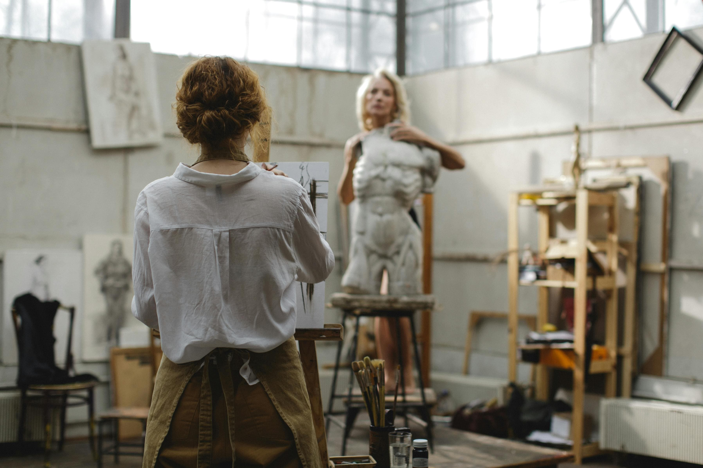
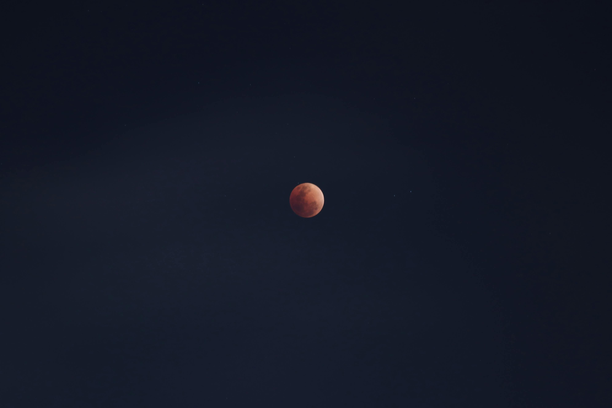

— простір для дослідження глибин людського досвіду. Ми поєднуємо
інтуїцію сновидінь, символізм мистецтва, мудрість тіла, космічну
навігацію та силу знань, щоб допомогти вам знайти гармонію між
внутрішнім і зовнішнім світом. Це місце для тих, хто шукає
відповіді, натхнення та нові шляхи пізнання себе.
Про проєкт
Altum Mare — простір глибинного дослідження людського досвіду. Наш
проєкт створений для тих, хто прагне зрозуміти себе глибше, розкрити
нові горизонти усвідомлення та знайти гармонію між внутрішнім світом
і зовнішньою реальністю. Ми інтегруємо: інтуїцію сновидінь, яка
відкриває приховані сенси та підказки; символізм мистецтва, що
резонує з нашою внутрішньою природою; мудрість тіла, як джерело
істини та життєвої енергії; космічну навігацію, яка вказує шлях у
нескінченності; сили знань, щоб перетворювати інформацію на
усвідомлення. Це місце зустрічі з собою — автентичним, вразливим і
могутнім. Altum Mare підтримує тих, хто шукає відповіді, натхнення
чи нові способи пізнання себе і світу. Разом ми відкриваємо двері до
гармонійного, глибшого життя, де кожен аспект вашого досвіду стає
важливим елементом цілісної картини.
Послуги
Сновидіння
Зазирніть у загадковий світ сновидінь, де приховані відповіді
на запитання, які ми не завжди усвідомлюємо. Тут ми
досліджуємо, як сни формують наші емоції, рішення та
внутрішній світ, допомагаючи побачити нові перспективи життя.
Ми пропонуємо індивідуальні та групові сесії з аналізу
сновидінь, які допоможуть вам: розшифрувати символи та
значення ваших снів; відкрити приховані підказки для вирішення
життєвих викликів; усвідомити свої страхи, бажання та глибинні
потреби; створити зв’язок між сновидіннями та реальними
подіями вашого життя. Зануртесь у тонке мистецтво роботи зі
снами, щоб знайти новий рівень гармонії та розуміння себе.
Ваші сни можуть стати потужним інструментом для особистісного
зростання та відкриття нових можливостей.
Образи в Мистецтві
Візуальне мистецтво має силу передавати те, що не можна
висловити словами. Цей розділ присвячений символам і образам,
що втілюють емоції, ідеї та архетипи через малюнки, фотографії
та інші художні форми.
Ми пропонуємо: індивідуальні сесії аналізу художніх образів,
які допоможуть зрозуміти глибокий сенс і вплив мистецтва на
ваш стан та сприйняття; творчі майстер-класи, де ви зможете
створити власні художні символи, що відображають ваші
переживання чи прагнення; персоналізовані рекомендації щодо
використання мистецтва для самовираження та внутрішньої
гармонії. Це можливість дослідити себе через мову візуальних
образів і символів, відкриваючи нові шляхи до розуміння
власного досвіду та життєвого шляху.

Тіло як провідник
Наше тіло — це не просто оболонка, а інструмент для сприйняття
та передачі енергії. У цьому розділі ми говоримо про те, як
фізичні відчуття, рухи й дихання можуть стати ключем до
розуміння себе та навколишнього світу.
Ми пропонуємо: індивідуальні тілесно-орієнтовані сесії, що
допоможуть вам відчути зв’язок між тілом, емоціями та думками;
практики усвідомленого руху й дихання, які сприяють
розслабленню, енергетичному балансу та гармонізації
внутрішнього стану; навчання роботі з тілесними сигналами, щоб
краще розуміти свої потреби та межі. Цей підхід допоможе вам
налаштуватися на своє тіло як на провідник істини, енергії та
мудрості, відкриваючи шлях до більш цілісного і гармонійного
життя.
Астро-Навігація
Погляньте на зірки як на мапу, що веде до ваших істинних
бажань і потенціалу. Цей розділ розкриває, як астрологія
допомагає зрозуміти життєвий шлях, розкодовуючи вплив планет і
космічних явищ на нас.
Ми пропонуємо: персональні астрологічні консультації, які
допоможуть вам краще зрозуміти свої сильні сторони, виклики та
потенціал; складання натальної карти, щоб ви могли побачити
свій унікальний космічний код та отримати відповіді на важливі
питання; аналіз поточних астрологічних впливів, щоб вибрати
найбільш сприятливий час для рішень і змін у житті; групові
воркшопи з основ астрології, де ви навчитесь самостійно читати
зоряні мапи. Астрологія — це не лише про передбачення, а про
розуміння вашого місця у Всесвіті та усвідомлене використання
космічної мудрості для створення гармонійного майбутнього.

Читанка
Затишний куточок для тих, хто любить шукати відповіді в текстах. Тут
зібрані книги, статті та інші матеріали, які надихають, навчають і
відкривають нові горизонти для роздумів і саморозвитку.